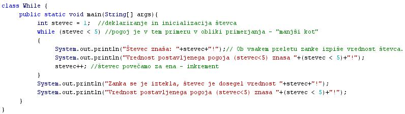
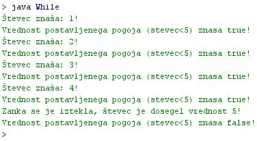

ZANKA WHILE
- Stavek "while" omogoèa ponavljanje izvajanja stavka ali bloka stavkov.
- Ker se izvajanje ponavlja in se torej vraèa na zaèetek, lahko govorimo o zanki.
- Zanka "while" se izvaja toliko èasa, dokler je vrednost postavljenega pogoja v zanki enaka"true" (resnièno, pravilno, 1).
- Postavljeni pogoj v zanki "while" je logièna spremenljivka ali izraz, katerega rezultat je logièna spremenljivka.
- Beseda "while" pomeni "medtem, ko" oziroma "dokler".
- Znaka "while" torej ob vsaki izvedbi najprej preverja vrednost postavljenega pogoja.
- Èe je vrednost postavljenega pogoja enaka "true", se stavki, ki jih zanka "while vsebuje, izvedejo.
- Èe je vrednost postavljenega pogoja enaka "false", se izvajanje pograma prenese na stavek, ki sledi zanki "while".
- Primer:
while (pogoj) {
stavek1;
stavek2;
stavek3;
stavek4;
}
VAJA 22:
- V okolju za pisanje izvorne kode v jeziku Java, za prevajanje in za interaktivno delo zapiši zgornji program "While". Pomagaj si s sliko.
- Kodo lahko tudi kopiraš iz te datoteke in jo prilepiš v okolje, v katerem pišeš programèke. Pozor: koda, ki jo boš kopiral/a, vsebuje eno, dve, tri ali štiri napake. Èe želiš, da bo program deloval, moraš napake odkriti in jih odpraviti.
- Izvorno kodo shrani pod imenom "ImePriimek22.java". ImePriimek je seveda tvoje lastno ime in priimek.
- Datoteko "ImePriimek22.java" prevedi.
- Prevedeno datoteko zaženi, preveri rezultat v interaktivnem oknu in poklièi profesorja, da vidi rezultat.
1. Vprašanja:
1. Kaj je znaèilnost zanke pri programiranju?
2. Kaj pomeni beseda "while"?
3. Kdaj se izvajanje zanke "while" zakljuèi?
4. Koliko stavkov vsebuje zanka "while" v vaji te uène enote?
5. Koliko stavkov še sledi zanki "while" v vaji te uène enote?
6. Zapiši pogoj v zanki "while" v vaji te uène enote.
7. Kolikokrat se zanka "while" v vaji te uène enote izvede?
8. Zakaj se je izvajanje zanke v vaji te uène enote zakljuèilo?
9. Zapiši stavek, ki se je izvedel v vaji te uène enote takoj po zakljuèku izvajanja zanke "while".
10. Kako ja zapisan pogoj v zanki "while" v vaji te uène enote, kot izraz ali kot spremenljivka?
2. Zapiši od ene do pet kljuènih besed, ki povzemajo vsebino te uène enote.
3. Povezave do dodatnih informacij.
Gradiva na spletnih straneh fakultete za matematiko in fiziko v Ljubljani.
Spletni priroènik proizvajalca programskega okolja Java. To je podjetje Sun.
|